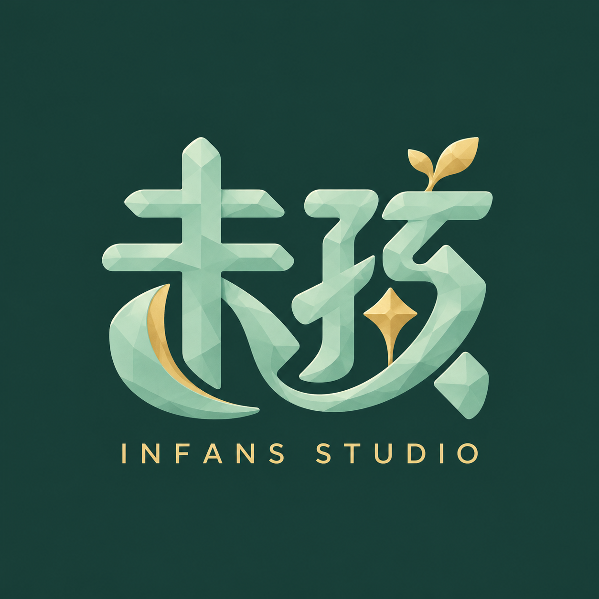
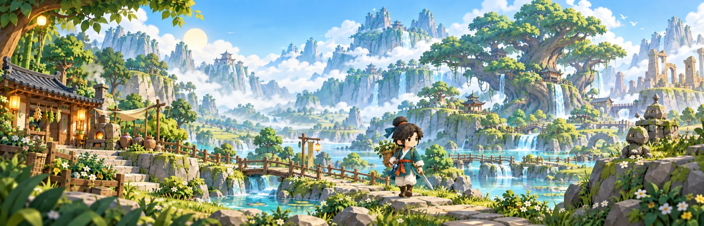
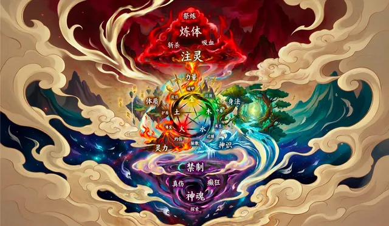
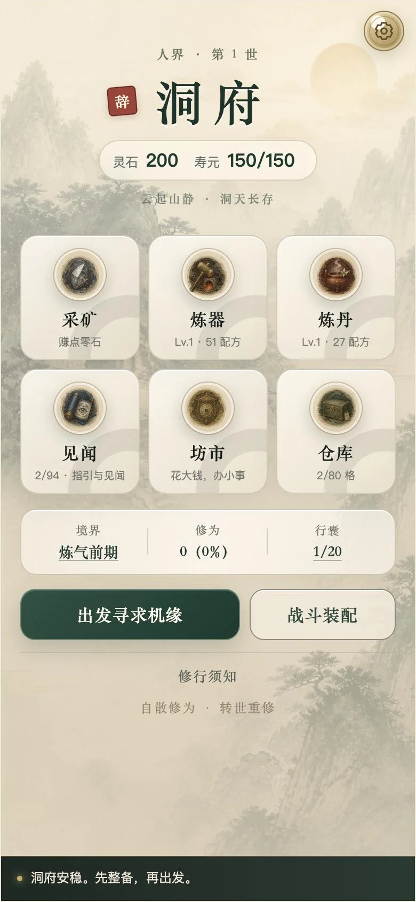

01 · 出山
寿元在走
野外每一刻都在消耗寿元。采药挖矿、雨中垂钓、破解机关，继续走，还是见好就收？

加入 Steam 愿望单
不上班了，去山里修仙。
辞职修仙传
离开办公室，走进有灵药、妖兽与石傀儡的世界。
野外每一刻都在消耗寿元，洞府里的日子可以慢慢过。
野外每一刻都在消耗寿元。采药挖矿、雨中垂钓、破解机关，继续走，还是见好就收？
看准出招，走位、闪避、反击。遇上难缠的首领，回洞府换装、炼制、备药，再来试试身手。
用草药播种药田，炼丹炼器。洞府里寿元不再流逝，还能偶遇一只猫，停下来摸摸它。
寿元耗尽，便转世重来。仓库、灵石、轮回天赋与洞府都还在。
实机画面
滑动浏览，点一张可以放大
以上均为开发中版本的实机画面，正式版本可能变化。
——《老子》
未孩游戏工作室位于上海。名字取自《老子》：婴儿还不会笑的时候。
我们想留住那份还没长大的好奇，把一个个想法，慢慢做成可以走进去的世界。

第一次想：要是裸辞去修仙，会怎样？于是做了一款 2D 修仙游戏，寿元、洞府和轮回，都是从这里开始的。

换个样子再试一次：装进手机竖屏，打开浏览器就能玩。从洞府出发，采药、挖矿，再转世。
现在还能玩 ↗同一个念头，长成了一座可以走进去的 3D 山海。
加入 Steam 愿望单 ↗在修仙之前，我们还做过一款角色收集的小游戏《心动物语》↗